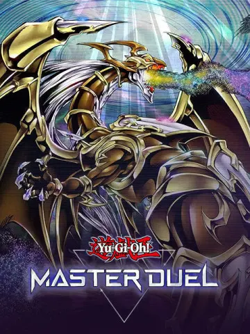
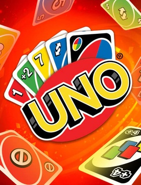

| Yu-Gi-Oh! Master Duel | ||
|  | Yu-Gi-Oh! Master Duel е безплатна дигитална колекционерска игра с карти, базирана на Yu-Gi-Oh! Игра с разменни карти, разработена и публикувана от Konami. |
| Uno | ||
|  | Uno е видео игра, базирана на едноименната игра на карти. Пуснат е за редица платформи. |